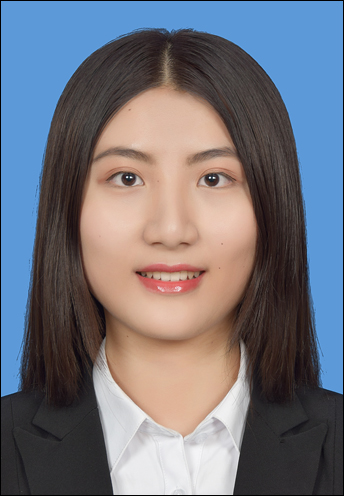

|
Yuying Huang
|
 |
Contact
Department of Statistics
Sun Yat-sen University
No.135, XinGangXi Road
GuangZhou, GuangDong, China
Email: huangyy73@mail2.sysu.edu.cn
|
About
A undergraduate student in Dept. of Statistics at Sun Yat-sen University, a member of Center for Financial Engineering and Risk Management, currently working as a research assistant for Sun Yat-Sen Business School(SYSBS).
Honors
3nd Prize, The Chinese Mathematics Competitions (CMC), China Mathematical Society, 2018
Honorable Mentions, Mathematical Contest in Modeling, COMAP, 2017
Merit Scholarship, School of Mathematics, Sun Yat-sen University, 2016
Academic Experience
“Generalized Linear Mixed Model(GLMM): Monte Carlo EM (MCEM) Method to Derive Maximum Likelihood Estimates (MLE)”, advised by Prof.Hui Huang, Houston, SYSU, China, 2018
Research Assistant, Systematic Risk Measurement and Management Strategy of Financial corporations, National Natural Science Foundation of China (NSFC) Program (No. 71701218), SYSU, China, 10/2017 - 09/2018
Internship & Training
Analyst, Big Data Application program, Accenture, Guangzhou, supervised by Miss.Yanling Du, Database Management, 11/2018-03/2019
Analyst, Risk Advisory (RA), Guangzhou Security, Guangzhou, supervised
by Mr.Qiang LI, Department of Risk Management, 05/2018 - 08/2018
Assistant, Department of Institutional Business, Founder Security, Guangzhou, supervised by
Ms.Jiawen Cai, Investment Services, 01/2018 - 03/2018
Computer Skill
R, Matlab, Stata, SQL, LaTex
|